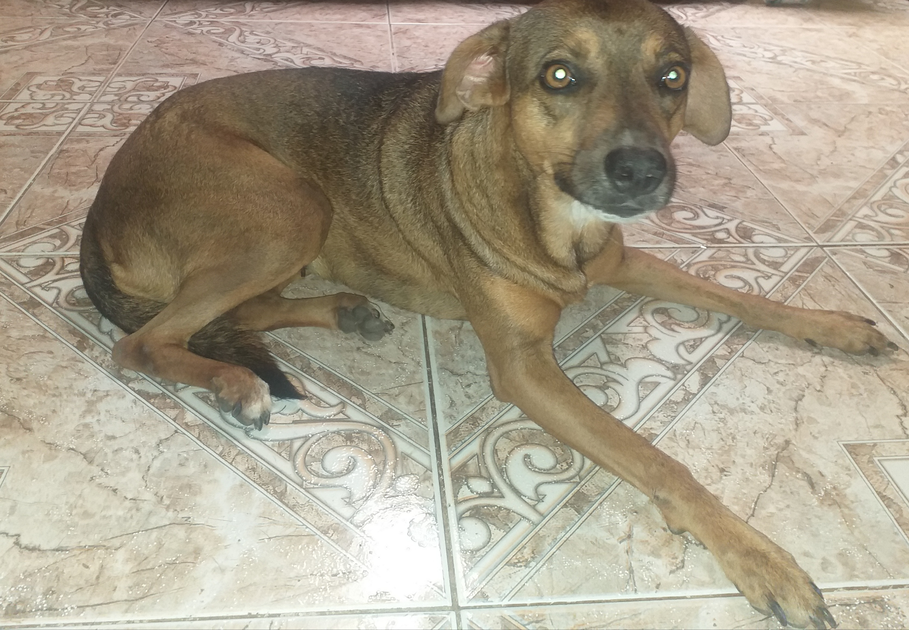
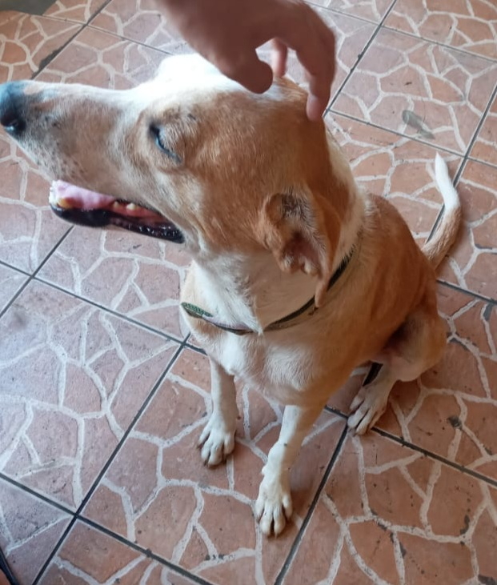

"Perros"
La decisión de salvarle la vida a un animal trasciende el acto humanitario del rescate. Implica asumir la responsabilidad de garantizarle un futuro promisorio al ser auxiliadoSi se trata de un animal silvestre, lo que procede es dar aviso al Sistema Nacional de Áreas de Conservación (Sinac) o al área de conservación que corresponda. La situación se complica cuando el protagonista es un perro o gato callejero, sobre todo, tomando en cuenta que la mayoría de refugios y centros de rescate están abarrotados.
Rescate de Perros

Rutty
Hola mi nombre es Rutty y fui victima de maltrato y fui rescatada por unos vecinos de la vereda en el sector de Villa grecia las Cumbres Panamá. y me encontre a una gran familía que rescato y me cuido con mucho amor y cariño.
white

hola mi nombre es white y tengo un mes de nacido naci el 3 de Enero en Ciudad Bolivar las Cumbres Panamá y mi madre fue herida de un machetazo, y hoy en día naci yo y estoy en una gran familía que me quiere de Corazon..
Catire
hola mi nombre es catire soy un perro que mayormente vivo en la calle y acogí este espacio porque mi anterior Dueña me maltrataba y me golpiaba luego de varios meses despues me acogieron una familía que me dieron agua, comida y me quede por un buen tiempo aqui soy de Villa grecia las cumbres Panamá..